Not sure? Open Settings › General › About and look at iOS Version.
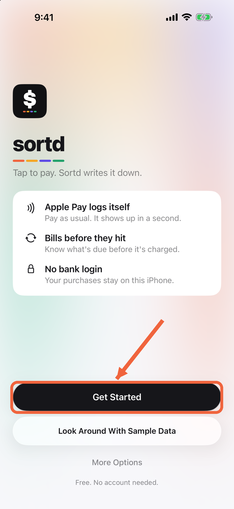
Tap Get Started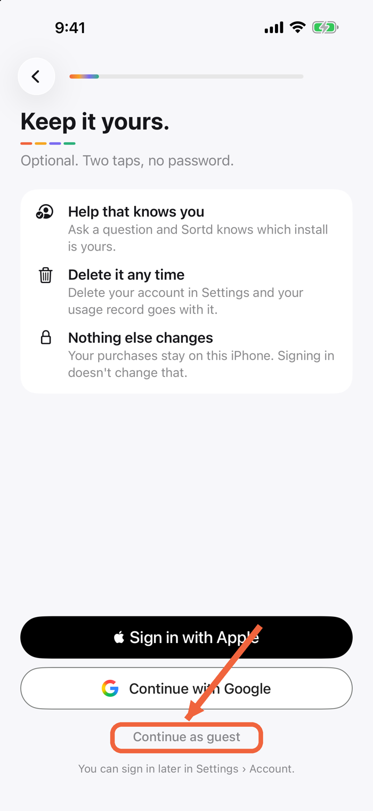
Sign in, or Continue as guest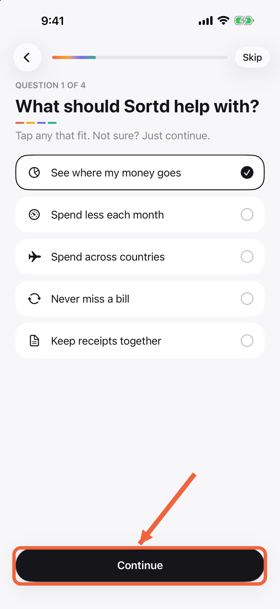
Answer 4 quick questions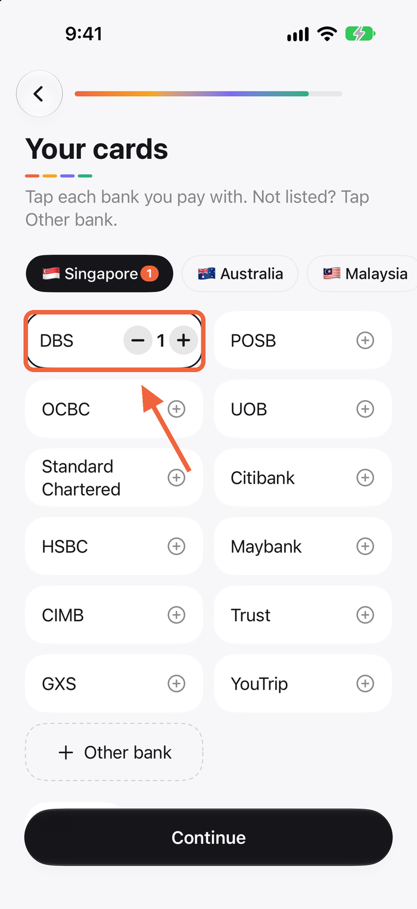
Tap the banks you pay withOn Sortd’s Log Apple Pay by itself screen.
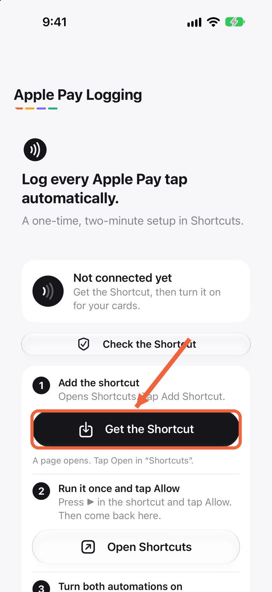
A page opens with the shortcut file.
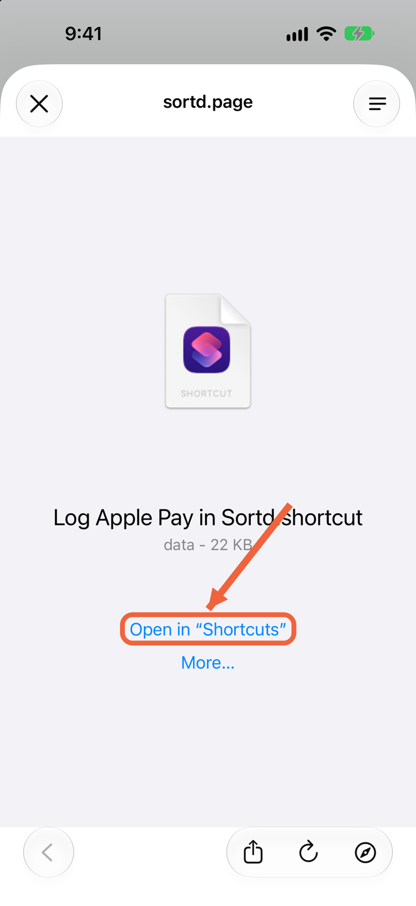
The blue button at the bottom.
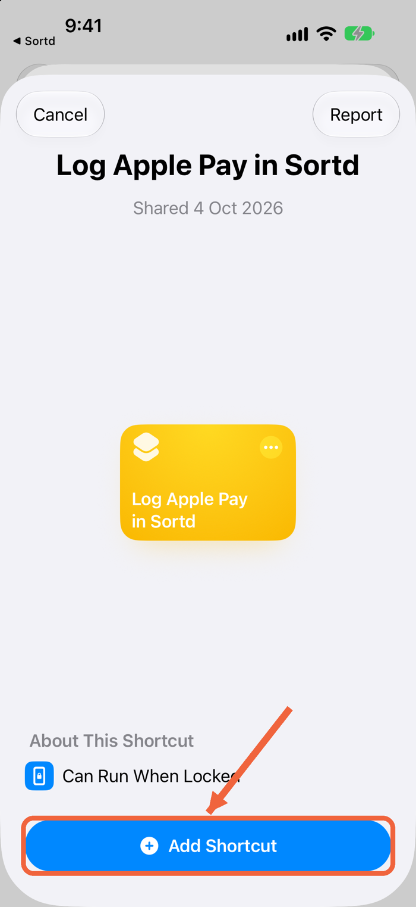
If you see Describe a Shortcut, tap Edit at the top right.
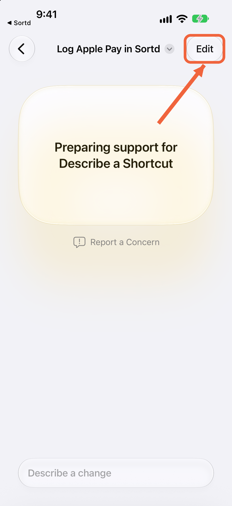
Bottom right of the screen.
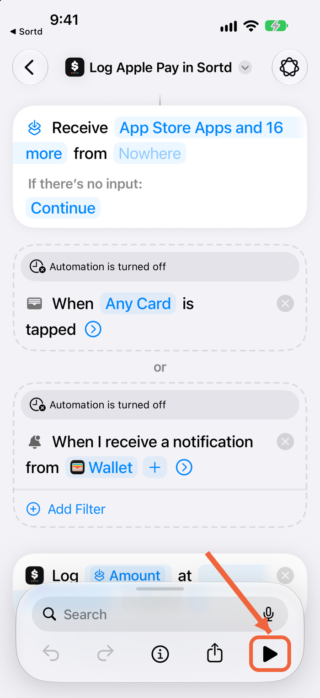
This lets the shortcut send your taps to Sortd.
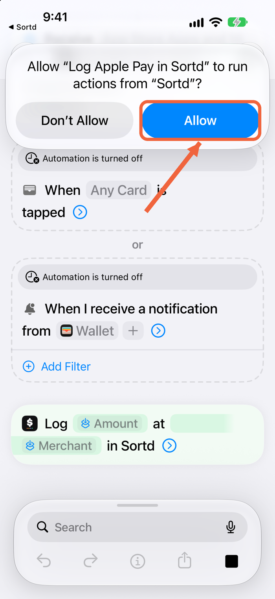
On the When Any Card is tapped line.
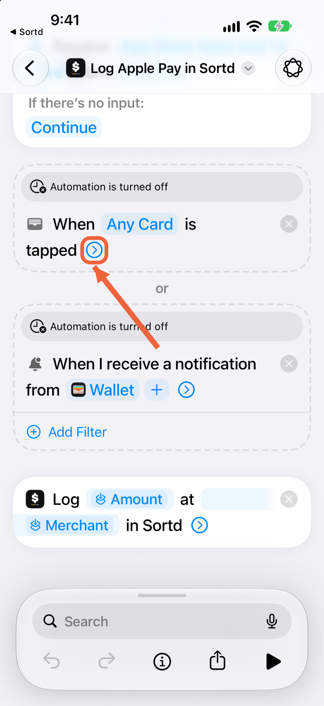
“Automation is turned off” goes away. Leave Notify off.
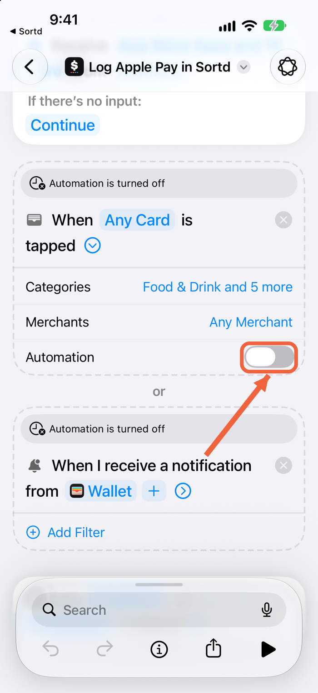
Tap › on When I receive a notification from Wallet, then switch on Automation. This logs Apple Pay in apps and on websites.
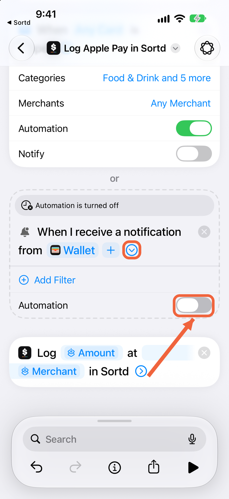
It is under step 3. Then tap Continue.
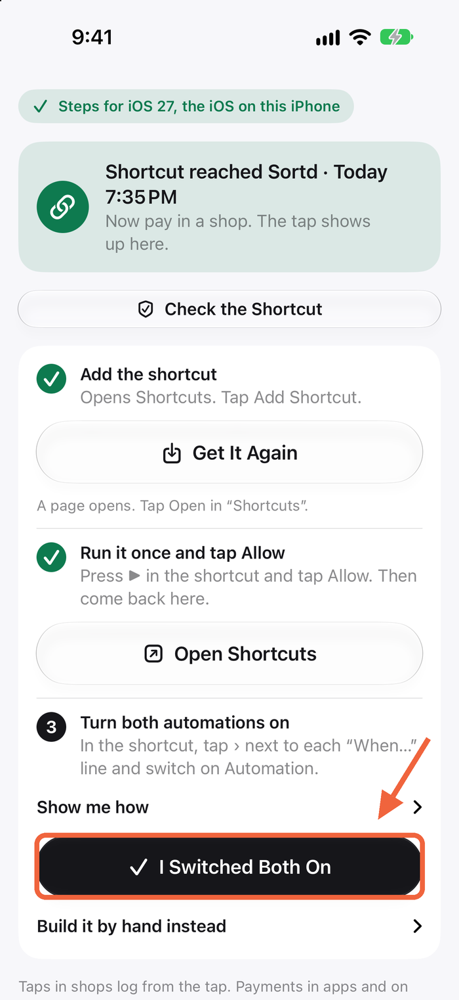
On Sortd’s Log Apple Pay by itself screen. All 5 steps are listed there too.
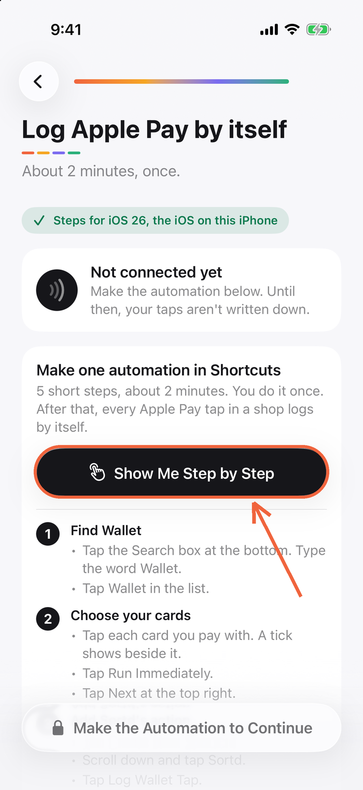
Shortcuts opens on a list.
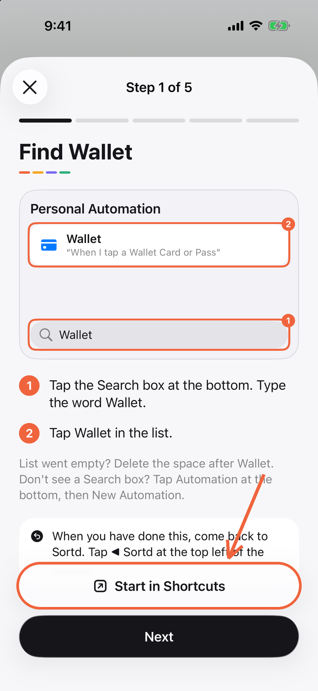
Search is at the bottom. Not there? Tap Automation, then New Automation.
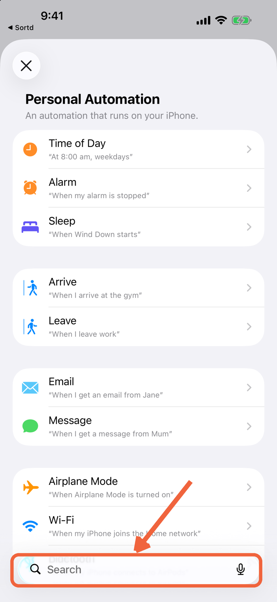
“When I tap a Wallet Card or Pass”.
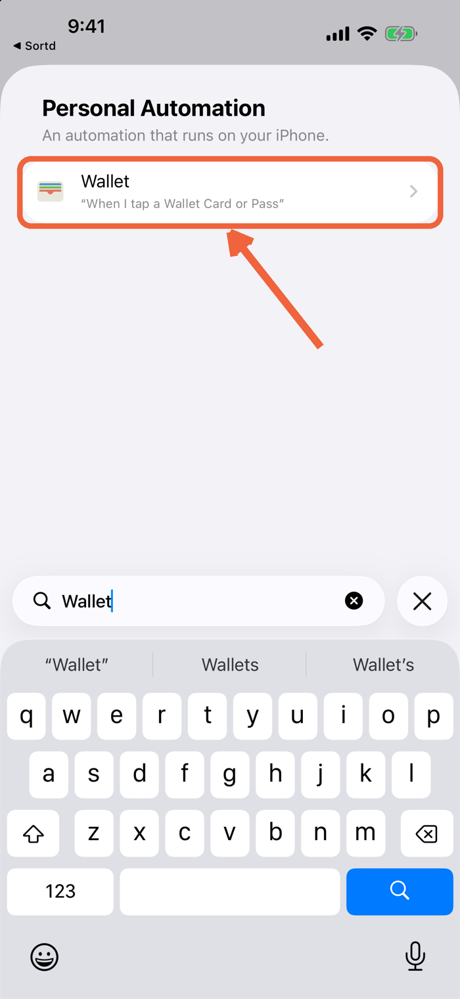
Tap each card you pay with. A tick shows beside it.
The tick moves to Run Immediately.
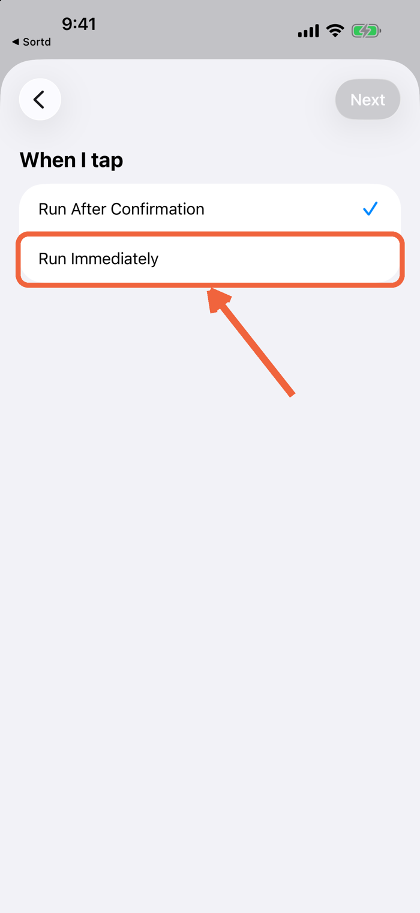
Top right. Leave Notify When Run off.
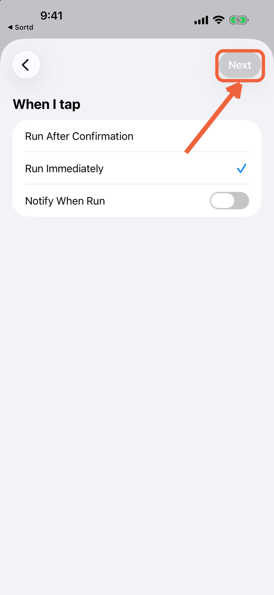
Don’t pick a shortcut under My Shortcuts.
Scroll down the list of apps to find Sortd. Not there? Open Sortd once, wait ten seconds, restart your iPhone and try again. Still missing: the support page has a way round, under “Sortd isn't in the list”.
Tap Amount, then Shortcut Input. Tap it again and choose Amount.
Do the same for Shop. Choose Merchant.
Tap the blue ›, then Card. Choose Shortcut Input, then Card or Pass.
It is under Card. Then tap Done at the top right.
Tap ◀ Sortd at the top left. Tap I’m Done, then Continue.
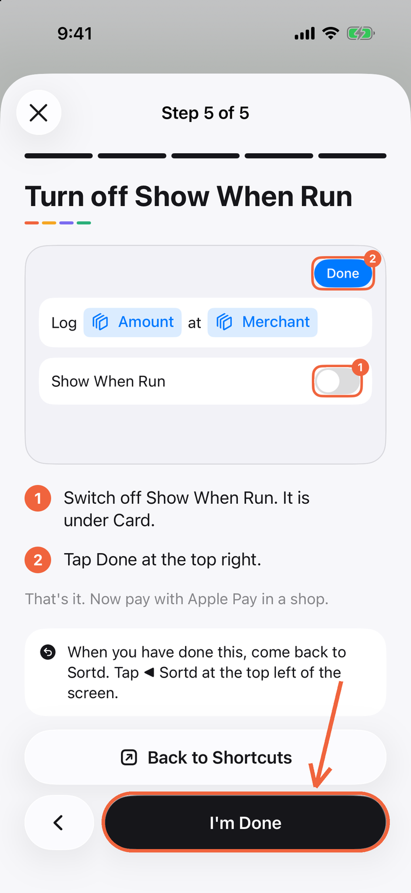
Open Sortd and tap Activity. The purchase is already there. The ▶ button in Shortcuts doesn’t test this.
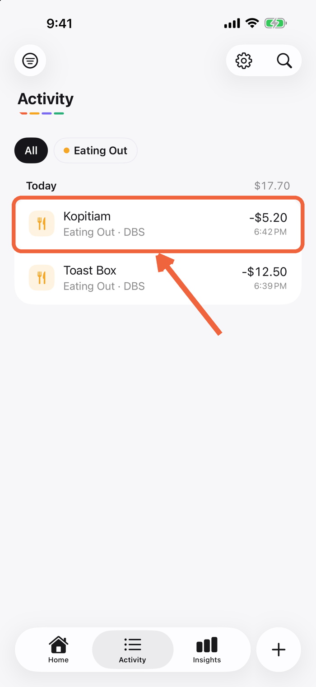
⚙ › Purchase Sources › Apple Pay Logging shows Last tap logged.
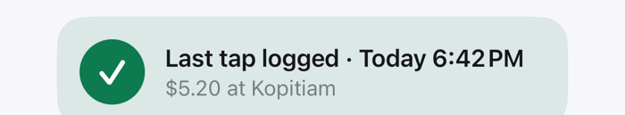